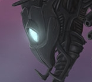
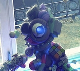
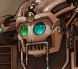

-
 Attribute Recognition
A machine learning project for identifying simple visible features based on natural language labels.
-
 DTW on Google N-Grams
Natural Language processing and a dab of culturomics using Google's N-Gram data.
-
Qt and OpenGl simulation
-
 Networks for Intent Recognition